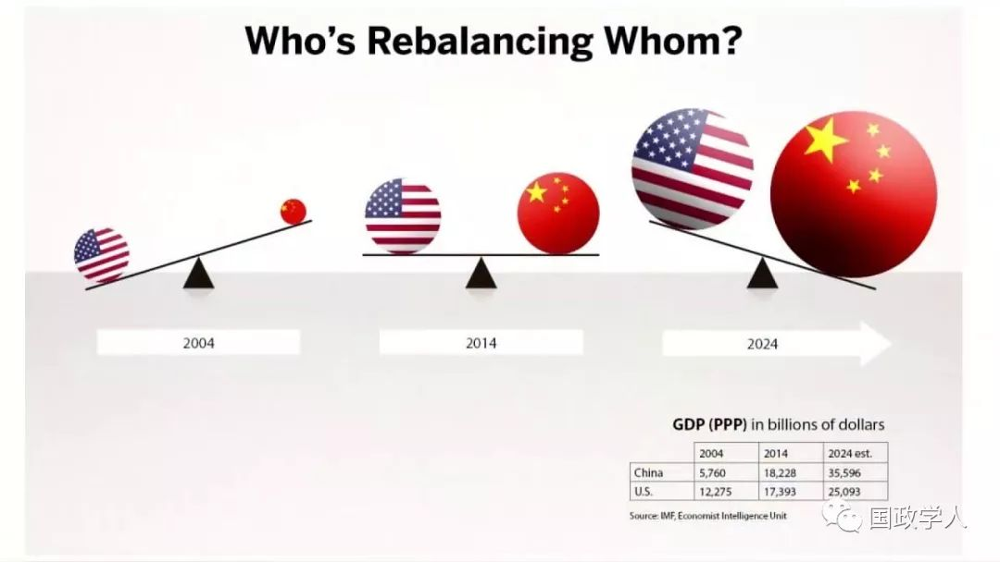
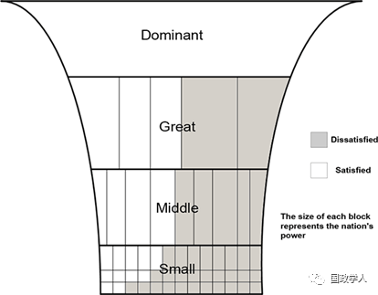
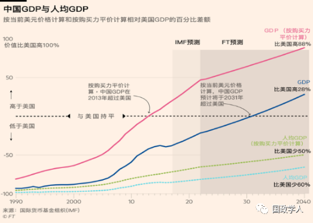

收录于合集

简 介
** 【作者】** 向骏 ，台湾致理科技大学教授兼拉美经贸研究中心主任，中华战略学会理事。乌拉圭陆军指挥参谋学院毕业、纽约大学拉丁美洲研究硕士、美国克莱蒙大学政治经济学硕士、政治学博士，研究专长是政治经济学、国际关系、拉美研究。
** **【 来源 】****作者投稿，国政学人原创稿件
** 【 ** ** 引用** 】****向骏. 美中权力转移的陷阱. 国政学人微信公众平台[EB/OL], 2019-07-28.
** 【声明】** 本文语言风格与大陆汉语略有差异，平台仅作部分校对，并最大程度尊重作者原意，文章观点不代表本平台观点。
中美权力转移的陷阱

致理科大拉丁美洲经贸研究中心主任向骏
（中评社 黄文杰摄）
正 文
2010年北京大学国际关系学院院长 王缉思 曾谓「无论从学术上还是从政策上讲，研究中国崛起和国际权力转移都将是今后20年内的重要课题。」复旦大学国际问题研究院常务副院长 沈丁立 则于2012年指出，「在未来十年，有两个情况会发生：一是资本的扩张还将继续不可遏制，无论中国还是西方，都将继续扩张自己的资本，所以中国必定还有发展的空间；二是由于我们已经达到美国GDP的48%，购买力也许已经达到70%—80%，从这点来看，世界权力出现更多转移，这不是是否可能的问题，而是已经发生，而且还会越来越明显。」七年过去了，美中权力转移确实越来越明显，举例说明如下。
2018年7月美国《国家利益》期刊(The National Interest)再度刊出米尔斯海默(John J.Mearsheimer)「向台湾说再见一文」，并将标题改为「台湾安息吧？」(RIPTaiwan?)，该文强调北京将「根据『门罗主义』的逻辑，中国为了维护自身安全，就会把美国军队赶出亚洲。」
今(2019)年5月29日美国参谋首长联席会议主席邓福德(Joseph Dunford)表示，中国违背了不会将南海岛礁军事化的承诺，呼吁採取「集体行动」让北京负起责任，其任期将于今年10月1日届满。7月11日获提名为下任美国参谋首长联席会议主席的陆军上将米勒(Mark Milley)警告中国带来的威胁长远，是未来50年至100年美国最主要的安全挑战。
7月18日特朗普总统任内第一位美驻联合国大使海利(Nikki Haley)在《外交》(Foreign Affairs)期刊题为「如何因应日益升高的中国威胁：贸易立场强硬只是第一步」(How to Confront an Advancing Threat From China: Getting Tough on Trade Is Just the First Step)文章中指出「中国希望篡夺我国在亚洲及全球其他地区的领导地位。」

1 **
** 权力转移理论 ****
「权力转移」理论系由奥根斯基 (A.F. Kenneth Organski) 于1958年在其所著《世界政治》(World Politics)一书中首次提出，他在该书曾谓「问题不在于中国是否会成为全球最强的国家，而是多久会到达此一地位。」1980年他和古格勒 (Jacek Kugler)合著的《战争总帐》(War Ledger)一书算是该理论之完整建构。1996年由古格勒主编之《均势与战争》(Parity and War)明确指出中国因综合国力不断提升而逐渐具备对国际现况表达不满的实力，最终将成为美国霸权的挑战者。千禧年出版的《权力转移：二十一世纪的战略》(Power Transition: Strategies for the 21st Century)一书更指出，「只要中国大陆继续对其在国际局势中所担任的角色不满，将是美国唯一潜在的挑战者。」
「权力转移」理论认为国际政治权力乃集中于少数国家之手，而战争则源自体系内主要国家间综合国力之差异、成长速度之快慢及对现状 (status quo)之满意程度。敌对国家或集团的政治、经济、军事等综合力量呈现均势(parity)时，战争的机率会增加，双方实力呈现明显差距时战争的可能性降低。发动战争者通常为综合国力较弱但不满于现状者，而综合国力则取决于人口之多寡、政治效率和经济发展。美国对外关系委员会(Council on Foreign Relations)主席哈斯(Richard N. Haass)指出，「中国如今的经济规模是30年前的30倍，已成为全球数一数二的经济体，认为其会满足于在美国设计和主导的国际体系中仅仅充当一个『负责任的利益相关者』，无疑是不切实际的。」「权力转移」理论认为「美国应该在台湾和西藏问题上避免引发中国的不满。」(国际体系满意/不满意结构如图1)

Source:Ronald L. Tammen, Jacek Kugler, and Douglas Lemke, “Foundations of Power
TransitionTheory,” Oxford Research Encyclopedia ofPolitics , Oct. 2017, p.9.
DOI: 10.1093/acrefore/9780190228637.013.296
由于权力要素的人口和政治力受外界影响甚小，而经济发展又以「内生成长」为主，故「权力转移」理论并不重视国际政治上的「结盟」，但 2002 年金武桑(Woosang Kim)针对「结盟」(alliance)提出修正。他的研究有三项结论：挑战者的不满意、对手国间的权力分配和结盟的程度都会提高衝突的可能性；结盟可提升权力，故可减轻或加剧战争的风险；透过技巧的结盟或解盟策略，东亚及其他地区的战争危机可获得管理。金武桑提出的修正相当程度说明了为何阎学通会于 2012 年大胆地提出应该放弃不结盟政策的建议，稍后他更在《世界权力的转移—政治领导与战略竞争》一书中主张「中国结交的盟友越多，这种关係就越协调、稳定。中国越迴避结盟，华盛顿方面就越可能遏制中国，因此会导致关係不稳定。」这就不难理解何以2017年发行的《大国外交》影集强调习近平外交的重要成果之一就是使中国的「朋友圈覆盖全球」。
2010~2013年曾任奥巴马国家安全顾问的唐尼伦(Tom Donilon)认为「奥巴马总统将活力十足的亚太地区升级为我们的战略重点之一，这表明了他的决心：那就是不能让我们国家的航船由于危机的盛行而偏离航道。有些国际准则必须成为我们共同未来的根基，强化这些准则、并确保各国政府遵循这些准则—我们每一个国家都将更为安全，也更加繁荣。」奥巴马虽因让美国退出领导角色而受到批评，但在某种程度上，奥巴马算是接受了全球权力转移的现实。
以美国和古巴的关系为例，1962年以来美国一直对古巴实行单方面的经济、商业和金融封锁。1992年古巴首次提出要求美国解除封锁的决议时有59个国家表示支持，之后投赞成票的国家逐年递增。奥巴马不仅在2016年3月并对古巴进行历史性访问并重开美国驻哈瓦那大使馆，同年甚至在联大首次投了弃权票。2018年11月1日联大决议案的表决结果是189票赞成，美国和以色列2票反对，没有弃权票(摩尔多瓦和乌克兰未投票)呼吁美国解除对古巴实施经济禁运。
从「结盟」的角度看，美中双方在拉美各有不同的考量。由于特朗普多次威胁退出「北美自由贸易协定」(NAFTA)，诺贝尔奖得主克鲁格曼(Paul Krugman)曾警告「如果我们鄙视规则，其他人也会。那整个贸易体系就解体了，其破坏力影响全球包括美国的製造业。」美国前财长萨默斯(Lawrence Summers)更认为「特朗普的贸易政策违背了所有战略准则，…美国数十年来与墨西哥培养友好关係的不懈努力也被浪费。美国对墨西哥採取的政策，简直就是为了让墨西哥能选出一位激进左翼总统。」
奥夫拉多尔(López Obrador)在2018年7月1日当选了总统，但墨西哥前总统培尼亚·涅托(Peña Nieto)仍于卸任前一天(11月30日)与美国和加拿大签署了「美墨加协定」(USMCA)。该协定除有助特朗普兑现关键的竞选承诺，更重要的是「意味著其贸易朋友圈继续扩大」，得以与中国展开贸易战。
至于中国在拉美最重要的战略伙伴巴西，尽管新任总统波索纳洛(JairBolsonaro)曾多次警告：「中国不是在巴西採购，他们是在採购巴西」，他甚至形容中国是「掠夺者」，企图主宰巴西经济的重要部门。3月访美期间，博索纳罗被问到如何看待中国在巴西的影响力时表示：「巴西将尽可能与更多的国家做更多的生意。商业活动不会跟以前那样与意识形态混在一起。」4月7日巴西副总统莫劳(Hamilton Mourao)接受《圣保罗页报》採访时表示，巴西政府没有看到限制华为公司投资的理由，并谓「华为目前正在为5G市场展开争夺，所谓的5G安全问题，完全是藉口。」7月15日巴西政府宣布不打算禁止华为参与该国5G网络建设。
 图2: 中国GDP与人均GDP变化表
《金融时报》，2018年4月12日
**2
** 艾利森的 「权力转移」陷阱
中央研究院政治研究所吴玉山教授认为「权力转移理论是完全适应著中国大陆追赶美国的国际现状，此一高度的适用性使这个理论产生了重大的实际影响…无论如何，权力转移理论都还是最有力的理论分析工具。」或许正因如此导致学者可能跌入学术的陷阱。
哈佛大学教授艾利森(Graham Allison)所著《注定一战：美、中能否避开修昔底德陷阱?》(Destined for War: Can America and China Escape Thucydides’s Trap?)应该是2017年国际关係理论类最受关注的书籍之一。艾利森在书中用「修昔底德陷阱」形容新兴大国挑战守成强国过程中蕴藏的巨大风险。他认为中国迅速崛起及对美国造成的挑战，使得两国「正处于触发战争的碰撞轨道上—除非双方採取艰难而痛苦的行动避免碰撞。」
「修昔底德陷阱」在奥巴马总统任内已多次被用于形容美中关系的盘根错节，特朗普就任后该名词更凸显了双边关係充满凶险的不可预测性。该书出版前，作者曾于《华盛顿邮报》撰文介绍主要观点，稍后《金融时报》、《华尔街日报》、《纽约时报》等媒体则陆续刊登精彩书评，《金融时报》中文网甚至特别专访艾利森教授。稍后，艾利森又在《外交事务》(Foreign Affairs)期刊2017年9-10 月号发表了「管理下一个中、美文明冲突」 (China vs. America: Managing the Next Clash of Civilization)，他认为中、美之间「文明的不相容性」(civilization lincompatibility)激化了双方竞争且难以达成和解。」
尽管艾利森刻意避免提到国际关系上的「权力转移」理论，但全书讨论的都是权力转移案例，因此不少学者提出质疑。例如美利坚大学(American University)教授Joshua Rovner认为艾利森的修昔底德陷阱「实际上是1950年代权力转移理论的精简版」(actually a simple version of power transition theory, which dates back to the 1950s)。又如布里斯托大学(University of Bristol)教授Neville Morley认为该书「提供了一个权力转移理论的范例。」(offers a template for Power Transition Theory)美国陆军战争学院战略学院院长Richard Lacquement甚至批评「刻意简化修昔底德的作品只会使人更难了解这段历史全盘的教训。」(Imposing an artificial simplicity on Thucydides’s work makes it harder to understand the full range of warnings that his history gives)。中美研究中心(Institute for China-America Studies)合作项目协调人Alek Chance更直白地指出「修昔底德陷阱就是西方政治学者所称权力转移理论的简写(shorthand)。」
**3
** 结 语
今(2019)年7月初清华大学当代国际关系研究院院长阎学通在第八届世界和平论坛期间表示「在大国制定外交政策时减少意识形态的考虑这个趋势下，越不考虑意识形态的，越能有利保护自己的国家利益；越考虑意识形态的，越不能最好地制定维护自己本国利益的外交政策。」此一趋势值得美、中两个大国深思。
_ ** _ 本文由国政学人微信平台独家编辑首发**
往期阅读
【重磅速递】约瑟夫·奈：美国霸权的兴衰：从威尔逊到特朗普 | 国政学人
【重磅推荐】巴里·布赞：英国学派视角下的中国崛起 | 国政学人
【重磅速递】米尔斯海默：注定失败：自由主义国际秩序的兴衰 | 国政学人
【百年国关】历史在国际社会中的应用：从巴黎和会到现在 | 国政学人
【国际组织】IO杂志：联合国维和行动的武力运用问题研究 | 国政学人
【国际秩序】为什么自由主义国际秩序理念将美国外交政策引入歧途？| 国政学人
【关系理论】“关系”：世界政治关系理论的中国话语 | 国政学人
【英国学派】张勇进：中国与全球国际社会中的自由主义等级制：实力与对规范变迁的协商 | 国政学人
【地区秩序】论经济实力的可转化性：中国经济崛起与东亚安全秩序 | 国政学人
【中俄关系】不得已的伙伴：系统-单元动态与中俄关系 | 国政学人
【IPE研究】美国对外贸易政策的“1934年体制”是如何形成的？| 国政学人
【现实主义】斯蒂芬·沃尔特：傲慢的终结与美国克制的新时代 | 国政学人
【理论批判】系统、层次与结构理论：沃尔兹的理论并非系统理论 | 国政学人
【外交政策】单极体系下的不和平状态与美国外交政策 | 国政学人
【欧洲研究】资本主义多样性与合规：加入欧盟后中东欧的经济改革 | 国政学人
【理论研究】吴建树：权力、道德、均势、联盟与摩根索——汉斯·摩根索的经典现实主义思想再解读
【友谊国关】将友谊重新引入国际关系：从中国到西方的关系本体论
【定量研究】政党实力和经济增长（Party Strength and Economic Growth）| 国政学人
【台湾学者】向骏：美国从“霸权稳定”到“霸凌不稳定” | 国政学人
【理论研究】巴里·布赞等：重思日本：主流国际关系理论的偏见 | 国政学人
【南亚研究】南亚对冲：中印竞争中经济和安全利益的平衡 | 国政学人
【外交政策】美国霸权的自我毁灭：华盛顿浪费了单极时代 | 国政学人
【定量研究】谁在欧洲议会中领导委员会？ ——基于2014年欧洲议会选举的研究 | 国政学人
【定量研究】暴露于难民危机之中会让当地人更有敌意吗？| 国政学人
【恐怖主义】恐怖主义组织扩展数据（EDTG）的介绍——从1970年到2016年 | 国政学人
【定量研究】赞助、信任和国家能力：庇护主义的历史轨迹 | 国政学人